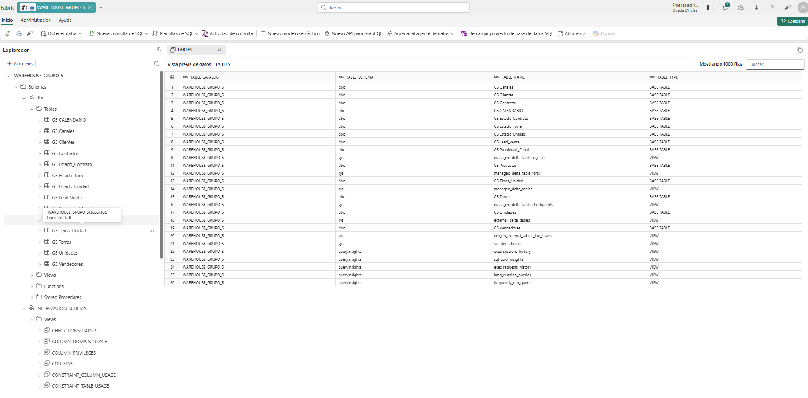
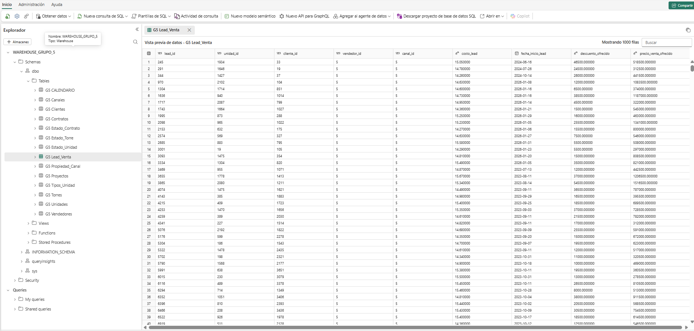
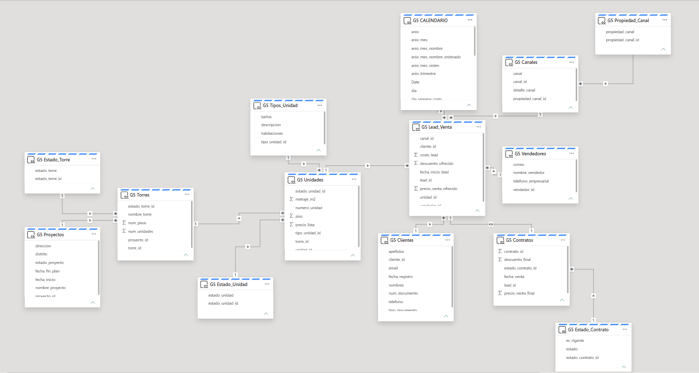

Consolidación del almacén de datos y validación del modelo analítico
Luego de ejecutar la capa ETL, las tablas son cargadas en Fabric Warehouse, donde se consolida el almacén de datos del proyecto. Esta capa permite validar la disponibilidad de la información, consultar las tablas cargadas y estructurar el modelo semántico que alimenta los reportes en Power BI.
Warehouse
Centraliza las tablas cargadas desde los dataflows y funciona como repositorio analítico para el proyecto.
Modelo semántico
Permite establecer relaciones entre dimensiones y tablas transaccionales, facilitando el análisis posterior en Power BI.
Automatización
Integra controles operativos mediante notebooks que notifican el resultado de la actualización del pipeline.
Vista general del Fabric Warehouse
El Warehouse implementado para el Grupo 5 contiene las principales tablas del modelo comercial, incluyendo clientes, canales, proyectos, torres, unidades, leads, contratos y tabla calendario. Esta evidencia confirma que los procesos ETL cargan exitosamente la información a un entorno analítico centralizado.

Fabric Warehouse del proyecto con las tablas cargadas y disponibles para consulta en el esquema dbo.
| Grupo de tablas | Tablas incluidas | Propósito analítico |
|---|---|---|
| Dimensiones comerciales | Clientes, Vendedores, Canales, Propiedad_Canal | Caracterizar al cliente, el origen del lead y el responsable comercial. |
| Dimensiones inmobiliarias | Proyectos, Torres, Unidades, Tipos_Unidad, Estado_Torre, Estado_Unidad | Describir la oferta inmobiliaria y su estado comercial. |
| Tablas transaccionales | Lead_Venta, Contratos, Estado_Contrato | Analizar el embudo comercial y medir la conversión de leads a ventas. |
| Tabla de tiempo | G5 CALENDARIO | Habilitar análisis temporal por año, mes, trimestre y día. |
Validación de la carga: tabla central Lead_Venta
Para validar que la información llegó correctamente al almacén de datos, se revisó la tabla G5 Lead_Venta dentro del Warehouse. Esta tabla constituye el núcleo transaccional del proyecto, ya que concentra cada oportunidad comercial registrada, junto con la unidad de interés, cliente asociado, asesor asignado, canal de origen y variables económicas del lead.
Campos clave validados
La tabla muestra campos como lead_id, unidad_id, cliente_id, vendedor_id, canal_id, fecha_inicio_lead, costo_lead, descuento_ofrecido y precio_venta_ofrecido.
Valor para el negocio
Esta estructura hace posible medir leads generados, seguimiento comercial, niveles de descuento, precios ofertados y el ratio de conversión comercial por canal, asesor, proyecto o periodo.

Vista previa de la tabla G5 Lead_Venta dentro del Warehouse, utilizada para validar la carga de la tabla transaccional principal.
Modelo semántico y relaciones
A partir de las tablas disponibles en el Warehouse se construyó un modelo semántico que organiza las relaciones entre entidades inmobiliarias, dimensiones comerciales y tablas transaccionales. Esta capa permite analizar el comportamiento de los leads y contratos de forma consistente, evitando duplicidades y facilitando la navegación entre dimensiones.

Modelo semántico utilizado para el análisis en Power BI, con relaciones entre proyectos, torres, unidades, clientes, canales, vendedores, leads y contratos.
Relaciones clave
El modelo conecta Proyectos → Torres → Unidades → Lead_Venta → Contratos, además de integrar dimensiones como clientes, vendedores, canales, propiedad del canal y estados del proceso.
Beneficio analítico
Esta estructura habilita análisis por proyecto, asesor, canal, unidad o periodo, y sirve como base para responder preguntas comerciales mediante dashboards y storytelling en Power BI.
Automatización e integración operativa
Como complemento a la carga del Warehouse, se integró una capa de automatización operativa basada en notebooks dentro de Fabric. Estos notebooks se ejecutan al final del pipeline para comunicar si la actualización de tablas fue exitosa o si ocurrió algún error durante la ejecución.
Notificación de éxito
Cuando todas las tablas terminan de actualizarse correctamente, el notebook envía un correo confirmando la ejecución exitosa del proceso. Esto ayuda a dar trazabilidad y confianza al flujo de actualización.
Notificación de error
Si alguna etapa del pipeline falla, se ejecuta un notebook alternativo que envía una alerta con el detalle del problema, permitiendo reaccionar oportunamente ante incidencias operativas.